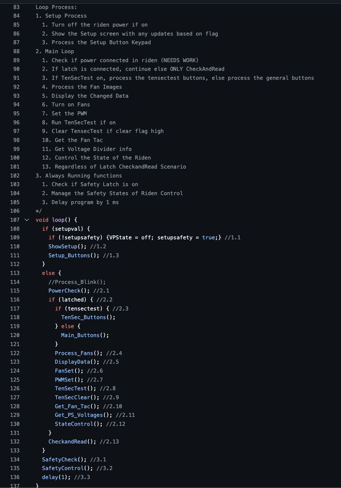

Fan Automation and RPM Tester
Project Overview
This project automates the testing of computer fans by reading RPM (revolutions per minute) values from the fan and logging them using a Python script. It interfaces a microcontroller with the fan to capture tachometer signals and sends data to a host computer via serial communication. The system allows hands-free, real-time testing and validation of fan performance.
Embedded Code for Fan RPM Reading

- Programmed in Embedded C to count tachometer pulses using hardware timers.
- Measured the number of pulses over a fixed interval to calculate RPM.
- Configured GPIO interrupts to detect rising/falling edges from the fan’s tach signal.
- Sent calculated RPM data over UART to the host system for further processing.
Python Serial Interface

- Used
pyserialto read data from the microcontroller over USB/serial. - Logged RPM values with timestamps to a text or CSV file for analysis.
- Displayed real-time RPM output in the terminal for quick validation.
- Supports adjustable baud rates and configurable COM ports.
System Features
- Non-intrusive real-time fan testing using tachometer feedback.
- Cross-platform serial communication via USB interface.
- Data can be easily exported to spreadsheets for trend analysis.
- Expandable to support multiple fans or automated test rigs.
Conclusion
This project showcases an effective and low-cost solution to test PC fans using embedded systems and scripting. It demonstrates integration of microcontroller-level signal processing with high-level data handling, and serves as a foundation for automated thermal management testing or quality assurance workflows.